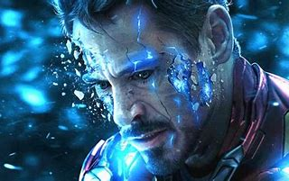

Robert Downey Jr.(Iron Man)
since 2008

Greatest Hero Of All Times
since 2008
Greatest Hero Of All Times
Iron Man is a fictional superhero appearing in American comic books published by Marvel Comics. The character was co-created by writer and editor Stan Lee, developed by scripter Larry Lieber, and designed by artists Don Heck and Jack Kirby. The character made his first appearance in Tales of Suspense #39 (cover dated March 1963), and received his own title in Iron Man #1 (May 1968). Also in 1963, the character founded the Avengers alongside Thor, Ant-Man, Wasp and the Hulk.
A wealthy American business magnate, playboy, philanthropist, inventor and ingenious scientist, Anthony Edward "Tony" Stark suffers a severe chest injury during a kidnapping. When his captors attempt to force him to build a weapon of mass destruction, he instead creates a mechanized suit of armor to save his life and escape captivity. Later, Stark develops his suit, adding weapons and other technological devices he designed through his company, Stark Industries. He uses the suit and successive versions to protect the world as Iron Man. Although at first concealing his true identity, Stark eventually publicly reveals himself to be Iron Man.
Initially, Iron Man was a vehicle for Stan Lee to explore Cold War themes, particularly the role of American technology and industry in the fight against communism. Subsequent re-imaginings of Iron Man have transitioned from Cold War motifs to contemporary matters of the time.
Throughout most of the character's publication history, Iron Man has been a founding member of the superhero team the Avengers and has been featured in several incarnations of his own various comic book series. Iron Man has been adapted for several animated TV shows and films. In the Marvel Cinematic Universe, the character was portrayed by Robert Downey Jr., appearing in the films Iron Man (2008), The Incredible Hulk (2008) in a cameo, Iron Man 2 (2010), The Avengers (2012), Iron Man 3 (2013), Avengers: Age of Ultron (2015), Captain America: Civil War (2016), Spider-Man: Homecoming (2017), Avengers: Infinity War (2018) and Avengers: Endgame (2019). The character also appeared in Spider-Man: Far From Home (2019) and in the upcoming Black Widow (2021) through archive footage.